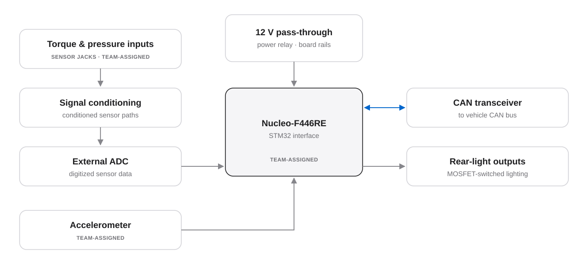
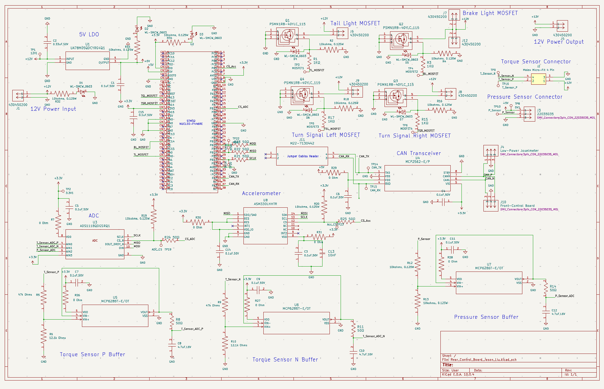
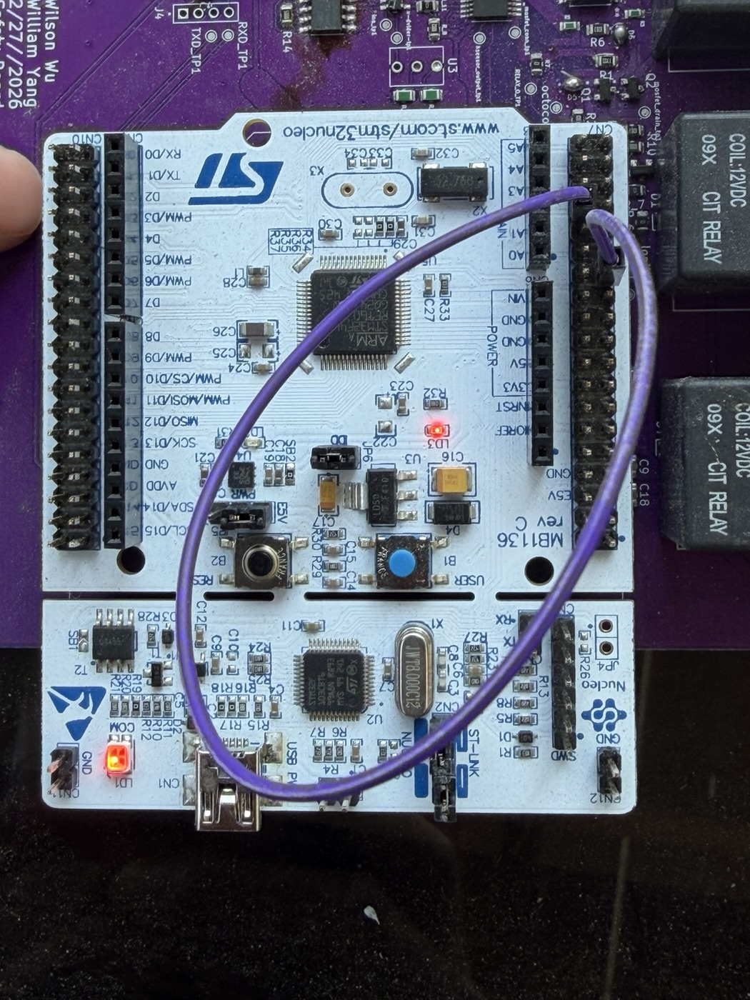
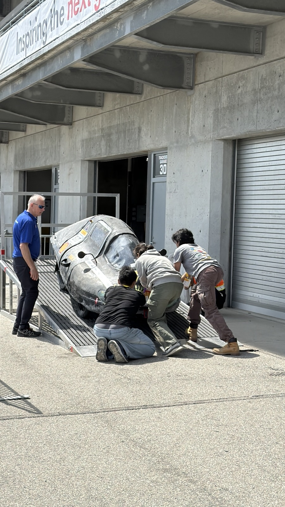

Completed · Sep 2025 – Jun 2026
Supermileage rear-control board and low-voltage integration.
Board design for rear lighting, sensing, and CAN, plus hands-on debugging of the vehicle’s existing low-voltage system.
Two contributions, kept separate. (1) I designed a rear-control PCB, my first complete flow from block diagram to schematic to two-layer layout. It has not been fabricated. (2) On the prior-generation system used on the 2026 vehicle, I did hardware integration and on-site CAN debugging.

A rear-control board around a Nucleo-F446RE.
The team assigned the required components and interfaces, including the MCU, the accelerometer, and the sensor jacks. I designed the circuits and completed the schematic and layout.
- 12 V power pass-through with a power relay
- MOSFET outputs for rear lighting
- CAN transceiver for communication with the rest of the low-voltage system
- Signal conditioning for the torque and pressure sensor inputs, into an external ADC
- Accelerometer and Nucleo-F446RE interface


Finding a CAN fault at the track.
On the prior-generation low-voltage system, I did soldering, crimping, cable and board bring-up, voltmeter and serial debugging, and RP2040 firmware work.
At the 2026 Shell Eco-marathon in Indianapolis, CAN messages weren’t being received. I isolated the fault with simple, practical checks:
- Loaded simple Arduino transmit and receive sketches onto the connected boards to see whether messages arrived.
- Worked segment by segment through the harness to find where reception failed.
- Found polarity reversals and harness discontinuities, then repaired them.
- Confirmed messages were received again. The repair made it possible to pass most of the electrical technical inspection.
This was practical bring-up, not a formal automated test framework. We didn’t capture waveforms or keep a detailed test log.
Vehicle photos


Choosing a brake-light sensor.
I evaluated three ways to detect braking: a Hall-effect sensor, a hydraulic-pressure sensor, and a strain gauge.
Mechanical constraints on the vehicle affected the other two options, so we deployed a strain gauge on the pedal assembly. It was the practical choice for this car rather than the theoretically best sensor.
State at the end of the season.
Done in hardware
- CAN fault isolated and repaired on the prior system
- Strain-gauge brake sensing deployed
Designed only
- Rear-control schematic and two-layer layout; the board was not fabricated